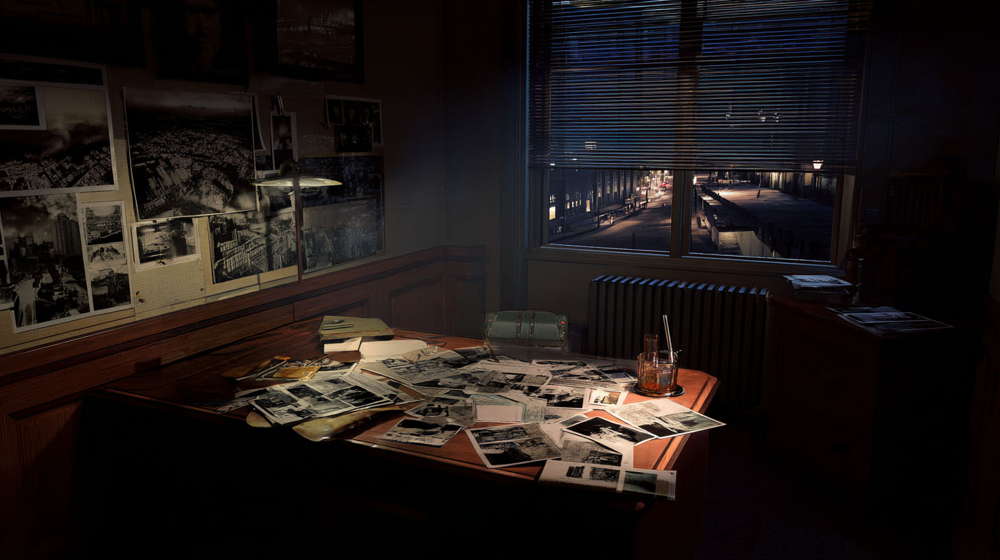

PO Box 449, Parramatta NSW 2150
Phone: 02 8844 9122 | Secure Fax Available

Office 4B, Level 2
If you're looking for someone to catch a cheating spouse, look in the Yellow Pages. If you have a problem that the police won't touch—or a problem with the police—you've found the right firm.
I served thirty years as a Detective Sergeant in the NSW Police Force. I know how the system works. More importantly, I know how the system is broken, and exactly who broke it.
Services Offered
Deep Background Checks (Financial & Corporate)
Counter-Surveillance & Bug Sweeping
Missing Persons (Non-Standard)
Corporate Whistleblower Protection
A Note on Discretion
I do not use cloud storage. I do not use digital case files. Every investigation is recorded on a 1984 Underwood typewriter and stored in a fireproof safe. When the job is done, the file goes into the incinerator. You pay in cash, and I never write your real name down.
> AUDIO_TRANSCRIPT // MICRO-CASSETTE TAPE 04
> DATE: 12 OCT 2026
> VOICE 1: RON JUBE
> VOICE 2: SARAH K (JOURNALIST)
>
> RON: "I pulled the property records for that warehouse in Detroit like you asked. It's owned by a shell company in Delaware, which is owned by a trust in the Caymans. It's Silas Kovic's logistics network. The whole thing is a front for Ryker."
> SARAH: "Can we prove it to the feds?"
> RON: "The feds? Sarah, the feds use Ryker's servers. They use his algorithms to catch terrorists. They aren't going to arrest the man who built their cages. If we're going to burn Dominic Ryker, we have to do it in the court of public opinion. You write the article. I'll make sure Arthur Penn's goons don't find you before you hit publish."